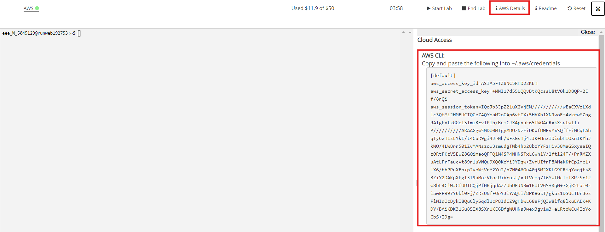
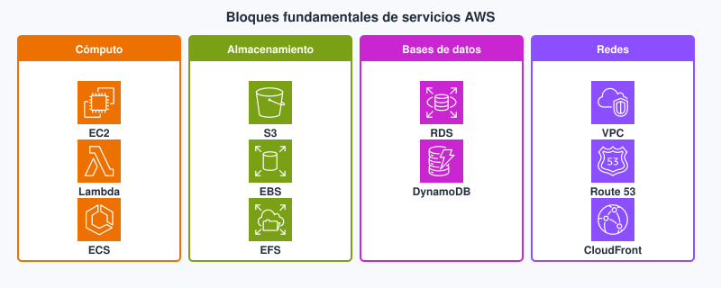
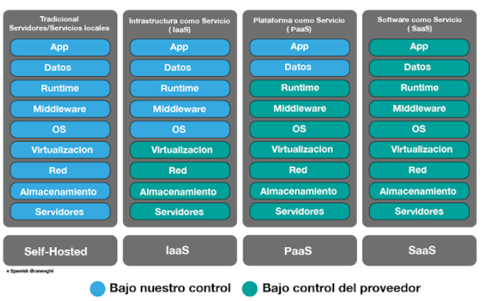
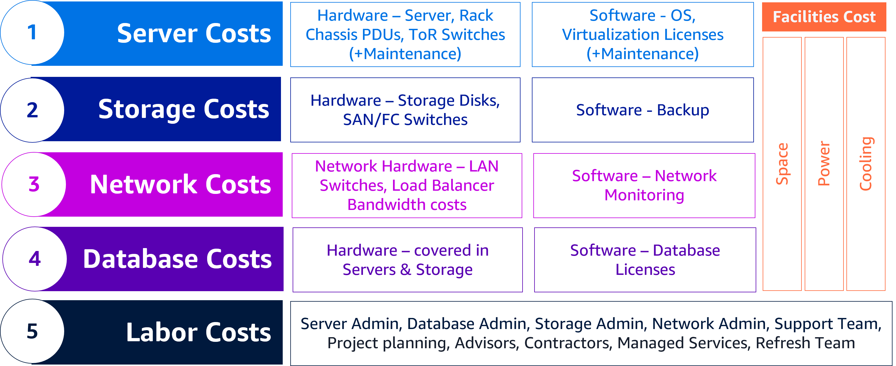
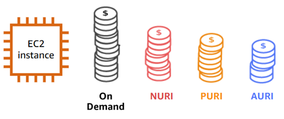
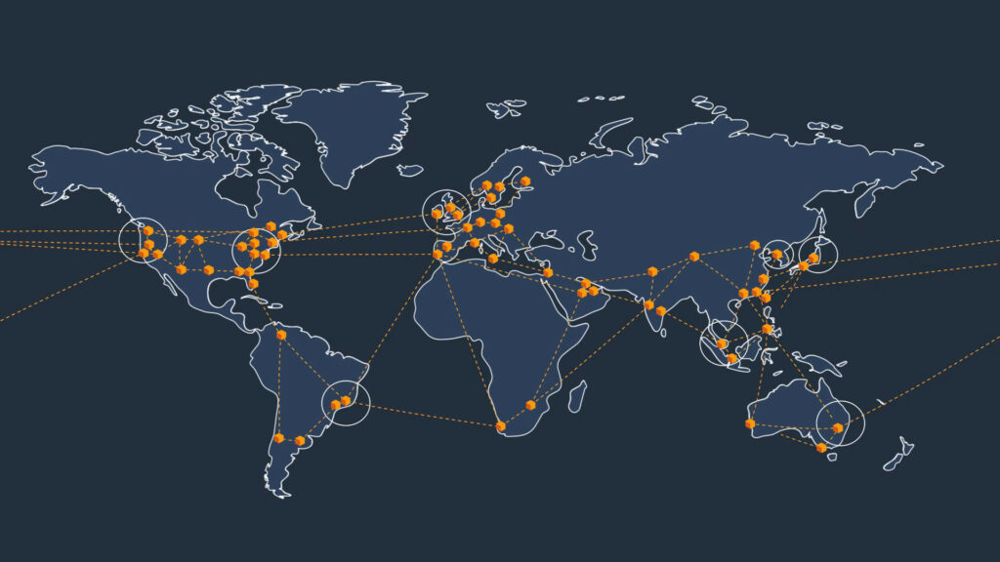
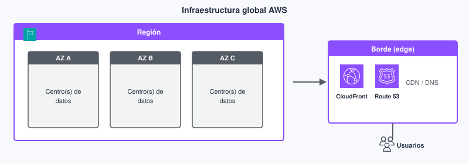

Tema 1. Fundamentos de la nube AWS¶
En este tema construimos el mapa que el resto del módulo da por sentado: qué es la nube pública, por qué una aplicación web deja el CPD propio, cómo se paga, y dónde viven realmente los recursos (región, zona de disponibilidad, consola).
El núcleo es AWS Academy Cloud Foundations: Introducción al curso y módulos 1–3. La ampliación apunta al vocabulario del examen CLF-C02 (AWS Certified Cloud Practitioner), sin convertir el tema en un plan de migración de empresa.
Primera clase
Empieza por el cuestionario inicial. No hace falta haber leído el tema entero: sirve para ver qué traes (VPS vs nube, IaaS/PaaS, región y factura) antes de Foundations.
Cómo leerlo
No hace falta memorizar el catálogo de servicios. Sí hace falta poder explicar un caso (tienda online, API de un proyecto de DAW, front estático) eligiendo modelo, región y una estimación de coste razonable. Los términos marcados enlazan al glosario al final del tema.
En semipresencial la tutoría (~1 h) no «explica el tema entero»: presenta el mapa, señala los labs y resuelve dudas del bloque anterior. El grueso es lectura + práctica autónomas. Si solo lees las tablas, el autocheck se cae; si solo lees los párrafos y saltas las prácticas de consola, el RA2 c) también.
Propuesta didáctica¶
Trabajamos el RA1 y el arranque del RA2 del módulo Introducción a la Nube Pública:
RA1. Comprende los fundamentos de la computación en la nube, sus ventajas frente a sistemas tradicionales, el marco de adopción, los principios de migración y los aspectos clave de facturación, como estimación y optimización de costos.
RA2. Identifica los componentes clave de la infraestructura global de la nube, diferenciando servicios principales, regiones, zonas de disponibilidad y aplicando medidas básicas de seguridad como el modelo de responsabilidad compartida, gestión de accesos y protección de datos.
Criterios de evaluación¶
RA1
- a) Se ha comprendido los conceptos fundamentales de la computación en la nube.
- b) Se ha demostrado la capacidad para explicar las ventajas de la nube frente a sistemas tradicionales.
- c) Se ha participado en actividades relacionadas con el ecosistema de servicios en la nube.
- d) Se han identificado los principios básicos de la facturación y costos en la nube.
- e) Se ha hecho uso correcto de herramientas para estimar y gestionar presupuestos.
- f) Se ha participado en actividades prácticas sobre gestión de costos.
RA2 (en este tema: infraestructura y categorías de servicio; IAM queda en el Tema 2)
- a) Se ha adquirido conocimiento de los componentes de una infraestructura global en la nube.
- b) Se ha demostrado la capacidad para explorar y describir las principales categorías de servicios disponibles.
- c) Se ha realizado una evaluación del uso adecuado de servicios básicos en ejercicios prácticos.
Contenidos¶
- Computación en la nube frente a on-premises; acceso por consola, CLI y API.
- Modelos de servicio (IaaS, PaaS, SaaS) y de despliegue (pública, privada, híbrida, multicloud).
- Ventajas, límites y trade-offs (agilidad, coste variable, dependencia del proveedor).
- Adopción y migración: marco CAF y estrategias (7 R) a nivel de reconocimiento.
- Economía: CAPEX / OPEX, TCO, dimensiones de precio, calculadora y presupuestos.
- Infraestructura global: regiones, zonas de disponibilidad, edge; navegación por la consola.
Programación de aula (orientativa, quincenas)¶
En INP la sesión de centro es tutoría quincenal (~1 h); el grueso es autónomo. El Tema 1 ocupa dos quincenas.
| Quincena | En tutoría | Trabajo autónomo / evidencias |
|---|---|---|
| Q1 | Acceso + mapa del tema + cuestionario | Lectura conceptos/modelos; PR101, PR102 |
| Q2 | Dudas Q1; facturación e infra global | PR103, PR104; Autocheck del tema |
Cuestionario inicial¶
Antes de Foundations — responde con lo que sepas
- ¿En qué se parece y en qué no un VPS barato a la nube pública que estudia este módulo?
- Si despliegas una API Node y un MySQL, ¿quién aplica los parches de seguridad del SO en IaaS frente a un motor PaaS/gestionable?
- ¿Por qué importa la región además de «que la consola abra»?
- Nombra dos partidas de coste distintas del precio «de la VM» (pista: salida de datos, personal, facilities…).
- ¿Qué pasa con la factura si dejas una instancia de lab encendida el fin de semana?
Este cuestionario es solo para ti: te ayuda a ver qué dominas ya y qué te falta antes o mientras lees el tema. No se entrega en Aules; respóndelo con lo que sepas y, cuando quieras contrastar, abre el bloque Soluciones (autoevaluación) debajo o el índice en Soluciones.
Soluciones (autoevaluación)
-
Se parecen en que alquilas capacidad por red; se diferencian en que la nube pública ofrece más servicios gestionados, regiones/AZ y facturación por uso medido, no solo «una VM remota».
-
En IaaS (EC2) tú aplicas los parches del SO; en un motor PaaS/gestionable (p. ej. RDS) el proveedor mantiene y actualiza el motor y tú sigues con datos, usuarios y configuración.
-
La región fija latencia, soberanía de datos y qué servicios/precios aplican; no basta con que la consola abra.
-
Ejemplos: egress (salida de datos), personal y mantenimiento, almacenamiento, balanceadores, facilities on-prem si comparas TCO…
-
Sigue facturando el tiempo encendido (y lo asociado); Free Tier no es «gratis ilimitado».
Bloque Foundations (Introducción al curso y M1–M3)¶
Qué es «nube» cuando desarrollas web¶
Computación en la nube es pedir capacidad de TI (tecnologías de la información) —CPU, disco, red, bases de datos, identidad— a un proveedor, por red, bajo demanda y medida. No montas el CPD (centro de proceso de datos): no compras el rack, ni el SAI, ni negocias el caudal de la sala. Creas un recurso desde la consola o desde tu código, lo usas y, si lo apagas bien, dejas de pagar por él.
On-premises significa que el hardware y gran parte del mantenimiento viven en instalaciones de la organización: el aula, el CPD del cliente o un hosting «caja en un rack» que alguien tiene que alimentar y aplicar parches de seguridad. En ese modelo dimensionas para el pico (Black Friday, entrega del proyecto intermodular, campaña). El resto del año esa capacidad duerme y sigue costando: electricidad, amortización, parches, espacio. En nube pública el coste se acerca al uso real, a cambio de aprender a apagar, etiquetar y no dejar un lab encendido el fin de semana.
Ventajas (nube pública, a ojo de Foundations)
- Escalabilidad: más o menos CPU, disco o balanceadores sin comprar rack.
- Agilidad: levantar un laboratorio o una API de prueba en minutos.
- Coste variable: pagas por uso (ojo: también te castiga el olvido).
- Menos mantenimiento de CPD: temperatura, SAI y cableado los asume el proveedor.
Desventajas / trade-offs
- Una mala arquitectura o un lab sin apagar dispara la factura.
- Hace falta gente que conozca la plataforma (no es «gratis de mantenimiento»).
- Datos en máquinas que no son tuyas: región, normativa y cifrado importan.
La frontera no siempre es nítida. Un VPS (Virtual Private Server, servidor privado virtual) barato de un hosting clásico puede parecer nube porque lo pides por panel y te dan una máquina remota. Aun así, muchas veces falta lo que este módulo llama nube pública: elasticidad real (subir y bajar capacidad en minutos), API de inventario (crear y borrar recursos desde código) y facturación por uso medido de muchos servicios, no solo «una VM al mes». Este módulo se centra en el modelo AWS: API, regiones, factura medible y catálogo de servicios. Si tu referencia mental es solo el panel de un hosting compartido, conviene recalibrar antes del Tema 3.
Una API Node o Java en el aula vive en un PC. En AWS esa misma API puede ser una máquina virtual (tú aplicas los parches de seguridad del sistema operativo, SO), un contenedor (empaquetas la app y el runtime) o una función que se ejecuta al llegar una petición HTTP. Las tres son «nube». No son el mismo trabajo para ti: cambia quién aplica los parches del SO y cómo pagas (hora de VM frente a invocación).
Mini-caso. Un proyecto de DAW con API Express y front React: en el aula todo corre en un portátil. En AWS el front puede ir a objetos estáticos (S3 + CDN), la API a una VM (EC2) o a funciones, y la base a un servicio gestionado (RDS). El «mismo» proyecto tiene tres facturas y tres límites de administración distintos; el error es tratarlos como un solo «servidor en la nube».
El ecosistema AWS (mapa corto)¶
Antes de abrir la consola conviene situar cuatro piezas que se repiten en todo el módulo. No son servicios concretos (EC2, S3…): son el marco donde esos servicios viven. Un desarrollador web elige en qué cuenta, en qué región y con qué herramienta (clic, CLI o SDK) crea un recurso; si mezclas esas piezas, el lab «funciona» pero la factura o la latencia no.
| Pieza | Qué es | Por qué te importa en DAW |
|---|---|---|
| Cuenta | Contenedor de factura e identidades | Cada lab tiene dueño y coste |
| Región | Área geográfica con varios centros de datos | Latencia y residencia del dato |
| Servicio | Producto (EC2, S3, IAM…) | Eliges uno por caso de uso, no «AWS en abstracto» |
| Consola / CLI / SDK | Tres formas de hablar con la misma API | La consola enseña; el SDK es lo que usará tu código |
En un despliegue real el orden importa: primero la cuenta y la región (en Academy, la que permite el Learner Lab); después el servicio; al final automatizas con CLI o SDK. Crear un bucket «porque el tutorial lo hace en us-east-1» mientras el resto del grupo trabaja en Europa es un clásico que mezcla latencia, precio y, a veces, residencia del dato. Más adelante en este tema ampliamos consola, CLI y SDK con ejemplos concretos.

Categorías que irás viendo: cómputo, almacenamiento, bases de datos, red, seguridad, gestión, facturación. No memorices doscientas marcas; sitúa en qué cajón está cada servicio cuando lo uses en un lab.

Características (cuando sí es nube)¶
Cuando Foundations habla de nube pública, suele apuntar a cinco rasgos. No son eslóganes: sirven para distinguir un CPD clásico de lo que vas a practicar en el lab.
Bajo demanda. Pides capacidad cuando la necesitas. No abres un ticket de compras del centro para un servidor de prueba: creas la instancia o el bucket y, si el lab lo permite, empiezas en minutos.
Acceso por red. Llegas por HTTPS, API o consola. No hace falta «estar en el CPD» ni enchufar un cable al rack. Eso es lo que permite estudiar semipresencial con el Learner Lab desde casa.
Recursos agrupados (multitenancy). El hardware físico es del proveedor; muchos clientes comparten los mismos centros de datos, aislados lógicamente. Por eso el precio baja respecto a comprar torres «por si acaso», y por eso la seguridad de tu cuenta (IAM, red) importa tanto: el aislamiento no es magia, es configuración.
Elasticidad. Subes o bajas capacidad en minutos, no en plazos de pedido de hardware. En clase lo notarás cuando montas y borras un lab; en producción lo verás con Auto Scaling (Tema 8).
Servicio medido. Hay métrica (horas, GB, peticiones). Lo apagado no debería facturarse igual que lo encendido. Si tu «servidor» solo se puede pedir con un ticket de tres semanas y no hay factura por hora, no estás usando el modelo de nube pública que estudia este módulo: estás en un CPD clásico con otra etiqueta. La elasticidad sin medición es marketing.
Modelos de servicio: ¿hasta dónde operas tú?¶
Los modelos IaaS (Infrastructure as a Service, infraestructura como servicio), PaaS (Platform as a Service, plataforma como servicio) y SaaS (Software as a Service, software como servicio) no clasifican «lo moderno» frente a «lo antiguo». Clasifican hasta dónde llega lo que gestionas tú en la pila: sistema operativo, entorno de ejecución, aplicación. Para una API web la diferencia práctica es si mantienes y actualizas Node o Java y nginx, si solo despliegas código o si ni siquiera hospedas la app. La diferencia está en quién mantiene y actualiza cada capa: sistema operativo, entorno de ejecución, servidor web y tu código. Cuanto más mantienes tú, más control tienes, pero también más trabajo de administración.
En un equipo DAW esto se nota el día del incidente: en IaaS alguien entra por SSH y mira logs del SO; en PaaS miras logs de plataforma y haces redeploy; en SaaS abres un ticket al proveedor del correo o del CRM. Ninguno es «incorrecto»: cambia el contrato operativo.
IaaS — Infrastructure as a Service¶
Qué es en este caso. Alquilas capacidad de cómputo, disco y red virtual. Tú instalas el sistema operativo, el runtime (Node, JVM, PHP…), el servidor web y la aplicación. El proveedor se ocupa del hardware y del hipervisor. El ejemplo típico en AWS es una instancia EC2 con tu API.
En la práctica. Controlas el entorno: puedes instalar casi cualquier stack y depurar como en un VPS, porque entras al sistema operativo. A cambio, los parches del SO, el hardening, los backups de lo que corra en disco y buena parte de la alta disponibilidad pasan a ser tuyos. Si dejas la instancia encendida, la cuenta sigue facturando. Un Docker en EC2 sigue siendo IaaS a efectos de parches del SO: el sistema de la máquina es tuyo.
PaaS — Platform as a Service¶
Qué es en este caso. El proveedor gestiona el sistema operativo y buena parte de la plataforma de ejecución. Tú aportas código y datos. Un motor de base de datos gestionado (RDS) es el ejemplo que más verás en este módulo: el proveedor mantiene y actualiza el motor; tú sigues con esquemas, usuarios y consultas.
En la práctica. Reduces el trabajo de administración diario —el proveedor aplica parches del SO y mantiene la plataforma—, pero también pierdes control fino del entorno: no eliges cada paquete del sistema como en una EC2. Ese trato merece la pena cuando aceptas las restricciones de la plataforma a cambio de no administrar nginx ni el runtime a mano. No llames «PaaS» a cualquier cosa «en la nube»: EC2 con tu stack no lo es.
SaaS — Software as a Service¶
Qué es en este caso. Usas una aplicación completa por red: correo, CRM, wiki gestionada. Configuras y consumes; no hosteas la pila.
En la práctica. En un proyecto DAW el SaaS suele ser una dependencia —login de terceros, correo del centro, pasarela de pagos—, no el sitio donde despliegas tu API. Confundir «uso el correo del centro» con «mi API corre en AWS» es un error típico de examen y de conversación con el cliente: en un caso consumes una app ajena; en el otro operas tu código.

| Modelo | Tú gestionas | El proveedor gestiona | Ejemplo web |
|---|---|---|---|
| IaaS | SO, runtime, despliegue, datos | Hardware, hipervisor | EC2 con tu WAR/JAR o API Node |
| PaaS | Código y datos | SO y plataforma | RDS; entorno de despliegue gestionado |
| SaaS | Uso y configuración | Toda la pila | Correo o CRM en el navegador |
Subir de IaaS a SaaS reduce el trabajo de administración y reduce el control. Un front estático en almacenamiento de objetos (S3) no es IaaS: no hay SO al que aplicar parches. Una API con estado y un cron pesado tampoco es candidata automática a una función de pocos minutos de ejecución.
Antes / después (proyecto DAW). Antes sueles tener un VPS alquilado donde instalas nginx, Node y MySQL y renuevas certificados a mano (cerca de IaaS). Después puedes dejar el front en hosting estático u objetos, la API en un entorno PaaS o en funciones, y la base en RDS. Ganas tiempo de desarrollo porque el proveedor asume más trabajo de administración; a cambio pierdes el «entro por SSH y lo arreglo todo». Esa pérdida de control es una decisión consciente, no un fallo del diseño.
| Examen CLF | Clase DAW / empresa |
|---|---|
| Reconocer si un escenario es IaaS, PaaS o SaaS (quién mantiene y actualiza cada capa) | Justificar el modelo con tiempo de administración, control y riesgo del incidente |
| Evitar marcar «todo es PaaS porque está en la nube» | En el lab: EC2 = IaaS; RDS = plataforma gestionada; correo del centro = SaaS típico |
Errores frecuentes (modelos)¶
- Llamar «PaaS» a cualquier cosa «en la nube» (EC2 con Docker sigue siendo IaaS a efectos de parches del SO).
- Confundir SaaS (usas el correo del centro) con desplegar tu API en AWS.
- Elegir el modelo por moda («todo serverless») sin mirar estado, tiempo de ejecución y dependencias.
Modelos de despliegue¶
Además del «qué gestionas» (IaaS / PaaS / SaaS) está el «dónde vive la capacidad»: ¿en un proveedor de internet, en una infraestructura dedicada solo a tu organización, o en una mezcla? Confundir híbrida con multicloud es un error típico de examen y de diseño: la primera mezcla on-prem (o privada) con pública; la segunda usa varias nubes públicas a la vez.
Nube pública¶
Qué es en este caso. La capacidad la ofrece un proveedor por internet. Este módulo trabaja casi siempre aquí: AWS.
En la práctica. En el Learner Lab creas recursos, consumes créditos por uso y trabajas en la región que permite el lab. La agilidad viene de levantar una API o un bucket en minutos y de tener un catálogo amplio de servicios; el límite es que dependes del proveedor (precios, cuotas, cambios de consola) y de que hace falta aprender la plataforma.
Nube privada¶
Qué es en este caso. La infraestructura (centros de datos, cómputo, red) está dedicada a una organización, a veces con software tipo OpenStack. Ganas control del recurso porque no compartes el host con terceros desconocidos.
En la práctica. Suele implicar más CAPEX —compras o amortizas hardware— y personal que sepa operar esa plataforma. En este módulo solo la nombramos para no confundir «nube» con «marca AWS». No se instala ni se practica.
Nube híbrida¶
Qué es en este caso. Combina on-premises (o privada) y nube pública. Por ejemplo, la base de datos sensible se queda en el CPD del cliente y el front o el pico de tráfico salen a AWS.
En la práctica. Aparece en empresas e institutos con legado: no todo se puede (o se quiere) sacar a la nube de golpe. La red y la identidad se complican —VPN, directorios, quién autentica a quién—. No es «un poco de cada proveedor cloud»: eso sería multicloud.
Multicloud¶
Qué es en este caso. Usas varias nubes públicas a la vez (por ejemplo AWS y otro proveedor).
En la práctica. Puedes repartir riesgo o elegir el servicio más barato de cada proveedor, pero tienes que conocer más de una plataforma y el mantenimiento (identidades, redes, facturas) se complica. Este módulo se centra en AWS; multicloud suele ser decisión de empresa, no de un lab de Foundations.
| Tipo | Idea | Cuándo aparece en un proyecto |
|---|---|---|
| Pública | Capacidad de un proveedor, internet | Este módulo (AWS) |
| Privada | Infraestructura dedicada a una organización | Stack interno; fuera del alcance práctico del módulo |
| Híbrida | On-prem (o privada) + pública | Datos sensibles en casa, pico en AWS |
| Multicloud | Varias nubes públicas | AWS + otro proveedor; más trabajo de administración |
Existen otros proveedores públicos (Azure, Google Cloud…): aquí el hilo práctico es AWS.
| Examen CLF | Clase DAW / empresa |
|---|---|
| Distinguir híbrida (on-prem + pública) de multicloud (varias públicas) | En un proyecto de DAW o un encargo: ¿el cliente deja la BD en su CPD? → híbrida, no «multicloud» |
| Reconocer que este curso es nube pública AWS | No montar OpenStack en el lab «para practicar privada» |
Ventajas frente a sistemas tradicionales (con contras)¶
La nube no es «gratis» ni «siempre más barata». Es un cambio de inversión fija (CAPEX) a gasto ligado al uso (OPEX), con ventajas de velocidad y alcance global… y con contras: dependencia del proveedor, curva de aprendizaje y facturas si olvidas apagar. El ejemplo mental es una tienda con pico de un fin de semana: on-premises compras para el pico; en nube puedes crecer el cómputo esas horas —si lo has diseñado— y bajar después.
| Ventaja | Causa | Trade-off |
|---|---|---|
| Coste variable (OPEX) frente a CAPEX | Pagas mientras el recurso existe | Una instancia 24/7 puede salir más cara que un torre ya pagado |
| Economías de escala | El proveedor compra hardware a otro precio | Precios y cuotas los marca él |
| Dejar de comprar «por si acaso» | Elasticidad | Hay que diseñar el apagado y el autoescalado (Temas 4 y 8) |
| Agilidad | API en minutos | Curva de aprendizaje y facturas sorpresa |
| Alcance global | Muchas regiones | Cumplimiento: el dato tiene jurisdicción |
| Alta disponibilidad | Varias zonas de disponibilidad | Cuesta más que una sola VM |
La frase «la nube es más barata» es falsa como ley. Es más elástica. El ahorro aparece si mides y apagas; si no, pagas el pico y el olvido.
Para una API de clase, el beneficio inmediato suele ser agilidad (montar y borrar el lab en la tutoría), no «ahorrar dinero respecto al PC del aula». El beneficio de alta disponibilidad solo aparece si despliegas en más de una AZ: lo verás en redes, bases de datos y Well-Architected.
Adopción y migración¶
Migrar no es «subir un zip al bucket». Hay un marco de adopción —negocio, personas, gobierno, plataforma, seguridad, operaciones— y estrategias de movimiento. El CAF (Cloud Adoption Framework) en Foundations y en el CLF es un mapa de perspectivas, no un proyecto que entregues. Te sirve para no reducir «migrar» a un único ticket de infra: sin gobierno ni seguridad, el lift-and-shift solo mueve el problema a otra factura.
Las 7 R son etiquetas para cómo mueves una carga. No hace falta dirigir un programa corporativo, pero sí reconocer si alguien está haciendo lift-and-shift o rediseñando la app.
| R | Idea | Ejemplo DAW |
|---|---|---|
| Rehost | Lift-and-shift | La misma VM a EC2 |
| Replatform | Cambiar poco la plataforma | MySQL en servidor → RDS |
| Repurchase | Pasarse a SaaS | Wiki propia → servicio gestionado |
| Refactor | Rediseñar para nube | Monolito → API + funciones + objetos |
| Retire | Apagar | Servicio que ya no se usa |
| Retain | Dejar on-prem de momento | Legado con licencia rara |
| Relocate | Mover el hipervisor con poco cambio | Entorno virtualizado «tal cual» |
En este módulo identificas la R y el porqué. No montas un programa de migración corporativo.
Decisión típica DAW: monolito PHP + MySQL¶
Imagina un monolito PHP con MySQL en un hosting compartido. Hay al menos tres caminos razonables; no son «mejores» en abstracto: cambian riesgo, tiempo y trabajo de administración.
Rehost¶
Qué es en este caso. Llevas PHP y MySQL tal cual a una máquina EC2: misma app, mismo motor, otro sitio donde corre.
En la práctica. Es el camino más rápido: en pocas horas puedes tener la web respondiendo porque apenas cambias la app. A cambio sigues aplicando los parches de seguridad del sistema operativo, haciendo backups a mano (o con scripts tuyos) y, si no diseñas más, dependiendo de una sola máquina. Si esa instancia cae, cae el servicio. Sirve para probar en el lab o para un lift-and-shift urgente; no resuelve sola el mantenimiento a medio plazo.
Replatform¶
Qué es en este caso. Dejas PHP en EC2 (o en un entorno similar) y mueves la base de datos a RDS: cambias poco el código y ganas plataforma gestionada en el dato.
En la práctica. Con poco cambio de aplicación obtienes backups automáticos del motor y, si lo configuras, Multi-AZ: el proveedor mantiene una réplica en otra zona de disponibilidad y, si falla la primaria, la conmutación es automática y suele completarse en el orden de uno o dos minutos (no es «instantánea» ni garantiza cero impacto en las conexiones abiertas). Es un paso habitual en proyectos DAW cuando la base es el cuello de mantenimiento.
Refactor¶
Qué es en este caso. Rediseñas: API (por ejemplo con funciones), front en S3 y base gestionada o NoSQL según el caso.
En la práctica. Es otro proyecto, no el primer lab de Foundations. Encajas mejor con servicios gestionados y con un escalado más fino, pero pagas tiempo de desarrollo, pruebas y un modelo mental distinto: estado de la app, permisos IAM, cold start de las funciones, etc. El examen CLF te pide la etiqueta; en clase o en la empresa justificas el porqué con riesgo, coste y calendario.
| Examen CLF | Clase DAW / empresa |
|---|---|
| Elegir la R correcta (rehost, replatform, refactor…) ante un enunciado corto | Explicar por qué esa R: tiempo, riesgo, backups, Multi-AZ, deuda técnica |
| No hace falta diseñar el programa CAF completo | En el módulo: reconocer la etiqueta; en el proyecto de DAW o en un encargo: acotar alcance (replatform de BD ≠ reescribir todo) |
Economía y facturación¶
CAPEX (capital expenditure, gasto de capital) es lo que inviertes antes (servidores, SAI, licencias perpetuas). OPEX (operational expenditure, gasto operativo) es lo que pagas de forma continua por uso o suscripción. TCO (Total cost of ownership, coste total de propiedad) es el coste total de poseer y mantener el sistema: no compares solo el precio de la VM; incluye electricidad, personal, red y el coste de esperar a ampliar.

Un error típico de proyecto escolar: comparar el €/mes de una instancia pequeña con «gratis en el aula» y concluir que la nube es cara. El aula ya está pagada por el centro; la nube te cobra el lab que dejas encendido. Otro error: olvidar que el tiempo de un desarrollador montando el CPD también es TCO.
Qué suele aparecer en la factura¶
- Tiempo de cómputo: horas de instancia o invocaciones de función.
- Almacenamiento: GB-mes y, a veces, peticiones.
- Salida de datos (egress). La entrada suele ser barata o nula; sacar GB hacia internet o hacia otra región duele cuando sirves vídeos o descargas grandes. Un SPA pequeño casi no se nota.
- Licencias incluidas frente a BYOL (bring your own license), cuando aplica.
En una API de prácticas el coste dominante suele ser cómputo encendido (o el olvido), no el GB del front. Por eso la AWS Pricing Calculator pide supuestos explícitos: horas/semana, GB almacenados, GB de salida. Abre ese enlace directo para añadir servicios sin cuenta. Si alguna vez entras por la portada de calculator.aws, no pulses el botón naranja Sign in for personalized estimates (pide una cuenta de AWS): usa Create estimate (Crear una estimación). Con Academy no tienes cuenta propia para esa pantalla, y para estimar no la necesitas.
Herramientas de coste (usarlas, no solo nombrarlas)¶
| Herramienta | Momento |
|---|---|
| AWS Pricing Calculator | Antes de montar: estimas con supuestos (pública, sin iniciar sesión) |
| AWS Budgets | Durante: aviso cuando te sales del tope |
| Cost Explorer | A posteriori: qué ha costado de verdad |
| Free Tier | Cuotas de prueba, no «todo vale 0 €» |
| Tags | Etiquetas para repartir coste por proyecto o alumno |
La Pricing Calculator te obliga a escribir supuestos (horas, GB, región). Si el supuesto es mentira («la API solo corre 2 h/semana» y la dejas 24/7), la estimación no te salva. Budgets es el aviso a tiempo: defines un tope y recibes alerta al acercarte. Cost Explorer mira hacia atrás: qué servicio se ha comido el crédito del lab. Las tags (etiquetas clave/valor) sirven para agrupar coste por práctica o por proyecto cuando la cuenta crece.
Planes de Support (básico incluido frente a planes de pago) y Trusted Advisor (comprobaciones de coste y seguridad según el plan) existen; aun así, apagar el lab sigue siendo tu responsabilidad.
Modelos de compra de cómputo (reconocer)¶
On-Demand. Pagas por hora o segundo sin compromiso. Flexibilidad máxima; es lo habitual en el lab Academy (junto con Free Tier cuando aplique).
Savings Plans / Reserved. Te comprometes a un uso a medio plazo y, a cambio, bajas el €/hora. Encajan en cargas estables; no actives esos planes en una cuenta de clase sin criterio.
Spot. Usas capacidad sobrante del proveedor: sale más barata, pero AWS puede interrumpir la instancia. Sirve para trabajos por lotes que pueden pararse y retomarse; no para el checkout de una tienda.

Checklist de lab (coste). Antes de crear nada, confirma la región del lab o del enunciado. Mientras trabajas, aplica tags si el lab lo pide. Al terminar, termina las instancias y borra volúmenes y balanceadores de prueba. Estimar en la calculadora no evita tener que apagar lo que creaste.
| Examen CLF | Clase DAW / empresa |
|---|---|
| Relacionar CAPEX/OPEX, Free Tier con límites, On-Demand / Spot / Reserved | Estimar con la calculadora, apagar el lab y leer la factura o el presupuesto del Learner Lab |
| Reconocer egress como partida distinta de la VM | En un front con vídeos: mirar GB de salida, no solo el tamaño del bucket |
Infraestructura global y consola¶
Región y zona de disponibilidad¶
Una región es un área geográfica con varios centros de datos. Eliges región por latencia (cerca de tus usuarios), residencia del dato (normativa como el RGPD en Europa), servicios disponibles y precio.
En el Learner Lab de Academy usas la región que permite el lab (la verás en la barra o en la Student Guide). No cambies «por curiosidad» creando recursos en otra. Los avisos de «elige bien la región» de este tema valen sobre todo para proyectos reales o cuentas propias: ahí sí decides Irlanda, Frankfurt u otra según dato y usuarios.
Una zona de disponibilidad (AZ, Availability Zone) es uno o más edificios con energía y red propias, enlazados con baja latencia a otras AZ de la misma región. Por eso un fallo de planta no tiene por qué tumbar el servicio si tú despliegas en más de una AZ. Alta disponibilidad típica no es «una VM gorda». Región y AZ no son sinónimos: la región es el área; la AZ es el edificio (o cluster) dentro de esa área.

Ejemplo DAW. Despliegas la API solo en una AZ (por ejemplo eu-west-1a). Un mantenimiento o un fallo en esa AZ tumba el proyecto de DAW aunque la región «Irlanda» siga existiendo. Con un balanceador de carga (por ejemplo un ALB, Application Load Balancer) y instancias (o tareas) en dos AZ, el usuario puede seguir entrando. Eso cuesta más (doble mínimo de capacidad) y es el trade-off que Well-Architected llama fiabilidad.
Las ubicaciones de borde (edge) acercan contenido (CDN, parte del DNS), no tu base de datos transaccional. Local Zones y Wavelength son nombres de examen (extensión metropolitana / 5G); no se configuran en este tema.
Consola, CLI y SDK: tres formas de hablar con la misma API¶
AWS expone una API. Tú puedes hablarle de tres maneras habituales; el efecto sobre la cuenta es el mismo tipo de llamada, cambia la herramienta.
Consola de administración. Es la interfaz web: buscas el servicio, pulsas botones y ves el resultado. Encaja bien para aprender, explorar un servicio nuevo y comprobar el estado del lab; se hace lenta si repites la misma tarea veinte veces.
CLI (Command Line Interface). Es la terminal con el comando aws: llama a la misma API que la consola, pero en script. Sirve para tareas rápidas y para automatizar lo que ya entiendes. Por ejemplo, en el lab puedes crear un bucket vacío con aws s3 mb s3://mi-bucket (con el nombre y la región que indique el enunciado).
SDK (Software Development Kit). Son bibliotecas en el lenguaje de tu app (JavaScript, Java, Python…). Es lo que usa tu código en producción: por ejemplo, subir la foto de un usuario a un bucket S3 desde la API Node. La app no «entra a la consola»; firma peticiones con credenciales (en el módulo lo verás con IAM).
| Herramienta | Cuándo usarla | Ejemplo DAW |
|---|---|---|
| Consola | Aprender, inspeccionar, labs guiados | Ver EC2 y S3 la primera vez sin crear recursos de pago |
| CLI | Tareas repetibles y scripts | aws s3 mb … / listar buckets en el lab |
| SDK | Lo que hace la aplicación en runtime | La API sube un fichero a S3 al registrar un usuario |
Orden de trabajo¶
- Cuenta y región. En Academy entras a la class correcta, dejas el lab en verde y trabajas en la región del lab. En un proyecto real eliges la cuenta adecuada y la región a propósito (usuarios, dato, precio).
- Servicio. Eliges EC2, S3, IAM… según el caso de uso; no «AWS en abstracto».
- Automatizar. Cuando el clic manual ya te sobra, pasas a CLI o SDK (e infraestructura como código más adelante).
La consola agrupa servicios y el buscador es el atajo para encontrarlos. Distingue servicios regionales (EC2, VPC) de otros de alcance global (IAM, en buena parte).
En el lab de Academy, mira la barra superior: AWS en verde, presupuesto y región. Si el círculo sigue en rojo, la consola aún no está lista; no inventes otra cuenta «por si acaso».

El error clásico de la región¶
Mezclar regiones «porque el tutorial lo hacía ahí» sale caro en tres frentes:
- Latencia. Si tus usuarios están en España y la API vive al otro lado del Atlántico, cada petición tarda más.
- Coste. La transferencia de datos entre regiones y la salida a internet se cobran; un front en un sitio y un bucket de fotos en otro suma líneas de factura y lío mental.
- Residencia del dato. En Europa el RGPD y las políticas del centro o del cliente importan: no da igual dejar datos personales en una región de otro continente sin criterio.
Si despliegas la API en Irlanda y el bucket de fotos en Oregón «porque el tutorial lo hacía ahí», sumas latencia, coste de transferencia entre regiones y un mapa confuso. Empieza todo el lab en la misma región (la del Learner Lab o la del enunciado), salvo que el propio lab diga lo contrario.

El flujo típico de un primer recurso de cómputo (AMI → instancia → security group → conectar) es el que verás en Foundations con EC2; aquí solo sitúalo en el mapa región/AZ.

| Examen CLF | Clase DAW / empresa |
|---|---|
| Región ≠ AZ; edge acerca contenido, no la BD transaccional | Lab: una región, la del Learner Lab; proyecto real: latencia + RGPD + precio |
| Consola, CLI y SDK como formas de usar la API | Consola para aprender; CLI/SDK cuando repitas o integres en la app |
Relación con el resto del módulo¶
Este tema no cierra la nube: fija el vocabulario con el que se entiende el resto. Cuando aquí tengas claros región, modelo de servicio y factura, el Tema 2 (identidades) deja de ser una lista de logos, el Tema 3 (VPC) deja de parecer «redes por magia» y el cómputo, el almacenamiento y los datos (Temas 4–6) se eligen con criterio. Los Temas 7 y 8 usan ese mismo mapa para trade-offs de diseño y para escalar sin volar la cuenta del lab.
Bloque Ampliación Practitioner (CLF-C02)¶
Los dominios Cloud Concepts y Billing, más región, AZ y edge, son el marco del examen en este bloque. El CLF-C02 pide identificar un beneficio o un servicio con una causa de una frase; no te pide diseñar el landing zone de una empresa ni un plan CAF completo.
Cuando repases para el examen, asocia cada etiqueta a un ejemplo de app web: «OPEX porque pago horas de instancia», «varias AZ porque un edificio no tumba el servicio», «Spot porque el batch puede interrumpirse». Si solo memorizas nombres, el enunciado del CLF te atrapa con distractores parecidos (híbrida frente a multicloud, región frente a AZ, Free Tier frente a «todo gratis»).
Para el CLF
En el examen importa la causa (OPEX, varias AZ, Spot como modelo de precio), no el eslogan. Las etiquetas CAF o las 7 R solo cuentan si las asocias a un ejemplo concreto. El borde (CDN —content delivery network, red de entrega de contenido— o DNS) acerca contenido; no mueve tu base de datos transaccional. Ampliación, trucos y autocheck certificación en Certificación § Tema 1.
Videotutorial (Practitioner). Sesión 1 Cloud Practitioner 2026 (~1 h 52 min). Salta al tramo de conceptos / valor / modelos. Vídeo: Profe Santos Cloud (YouTube).
Serie y tests → serie Santos · tests.
Videotutorial¶
Principal (Foundations). ATTA AWS Academy 01 Intro (~21 min).
Vídeo: Profe Santos Cloud (YouTube). Conviene fijarte en cómo se organiza Academy y qué vas a tocar en Foundations, todavía sin crear recursos de pago.
La activación de Skill Builder y los vouchers de certificación, con sus dos vídeos, están en Acceso (sección Vouchers).
Los módulos en vídeo del LMS (sistema de gestión del aprendizaje) de Academy (Introducción al curso y M1–M3) se indican en clase / Aules.
Actividad / práctica¶
PR101 — Consola y ecosistema¶
- PR101. (RA1 // c // RA2 // b, c // PR 0–10). Entras en la class de Cloud Foundations y reconoces el mapa de servicios en la consola learner sin crear recursos de pago.
Tareas: completa la Introducción al curso del LMS (encuesta previa, vídeo de introducción, ¿Cómo completar los ejercicios de laboratorio? y Student Guide); anota la región activa y usa el buscador de servicios; elige cinco servicios, cada uno con categoría y una frase de para qué sirve en una app web.
Entrega: según Cómo entregar las prácticas — fichero PR101.md (o ZIP + img/ si hay capturas).
Guía de apoyo: Soluciones · PR101.
| Criterio | Descripción | Puntos |
|---|---|---|
| Acceso e Introducción al curso | Class + encuesta previa completada | 0–2 |
| Consola sin coste | Región anotada; sin recursos de pago | 0–2 |
| Cinco servicios | Categoría + caso web claro | 0–4 |
Claridad del .md |
Estructura legible, sin catálogo interminable | 0–2 |
| Total | /10 |
PR102 — Modelos¶
-
PR102. (RA1 // a, b, c // PR 0–10). Clasificas cuatro situaciones de una app o centro educativo eligiendo modelo de servicio y de despliegue, y justificas la ventaja frente a comprar hardware.
-
Situaciones: correo del centro; API de un proyecto DAW; front estático; backup.
Tareas: para cada situación, indica IaaS/PaaS/SaaS y pública/privada/híbrida/multicloud; una frase de ventaja frente a hardware propio; knowledge check del Módulo 1 - Información general sobre los conceptos de la nube si está activo en Academy.
Entrega: según Cómo entregar las prácticas — fichero PR102.md.
Guía de apoyo: Soluciones · PR102.
| Criterio | Descripción | Puntos |
|---|---|---|
| Cuatro situaciones | Todas clasificadas | 0–4 |
| Modelos coherentes | Servicio y despliegue encajan | 0–3 |
| Justificación | Ventaja vs hardware (no eslogan) | 0–3 |
| Total | /10 |
PR103 — Estimación¶
- PR103. (RA1 // d, e, f // PR 0–10). Usas la AWS Pricing Calculator para comparar coste 24/7 frente a uso parcial y dejas claros los supuestos (calculadora pública; no hace falta iniciar sesión en AWS).
Tareas: estima un mes en región europea con instancia pequeña 24/7 + 50 GB de objetos + 10 GB de salida; repite la instancia a 40 h/sem; documenta supuestos y desglose; completa el lab de costes de Academy M2 si está activo.
Entrega: según Cómo entregar las prácticas — fichero PR103.md (capturas de la calculadora dentro del desarrollo si las usas).
Guía de apoyo: Soluciones · PR103.
| Criterio | Descripción | Puntos |
|---|---|---|
| Escenario 24/7 | Supuestos y desglose | 0–3 |
| Escenario 40 h/sem | Comparación coherente | 0–3 |
| Lectura de coste | Se entiende qué dispara la factura | 0–2 |
| Lab M2 (si aplica) / claridad | Evidencia o nota de no disponible | 0–2 |
| Total | /10 |
PR104 — Fábrica global¶
- PR104. (RA2 // a, b, c // PR 0–10). Relacionas región, AZ y mapa global sin crear recursos: dónde vive la carga y por qué importa la elección.
Tareas: compara dos regiones en consola (solo lectura); localiza en el mapa público de infraestructura una región europea con varias AZ; knowledge check del Módulo 3; en el .md, explica en pocas frases región frente a AZ.
Entrega: según Cómo entregar las prácticas — fichero PR104.md (o ZIP + img/ si hay capturas).
Guía de apoyo: Soluciones · PR104.
| Criterio | Descripción | Puntos |
|---|---|---|
| Comparación de regiones | Evidencia sin recursos de pago | 0–3 |
| Región europea + AZ | Localización correcta | 0–3 |
| Conceptos | Región ≠ AZ explicado | 0–2 |
| Knowledge check / claridad | Completado o justificado | 0–2 |
| Total | /10 |
Calidad del entregable
Prioriza supuestos claros y capturas con leyenda frente a listas interminables de servicios. Apaga lo que crees en el lab.
Lectura recomendada en dos pasadas¶
Primera pasada (Foundations): nube vs on-premises, IaaS/PaaS/SaaS, pública/híbrida/multicloud, CAPEX/OPEX, región/AZ, herramientas de coste. Sin esto, el resto del módulo parece una lista de marcas.
Segunda pasada (Practitioner): 7 R, CAF a alto nivel, On-Demand vs Spot vs Savings Plans, por qué edge ≠ base de datos. El examen premia la etiqueta correcta con una causa de una frase.
Si en tutoría solo da tiempo a una duda, prioriza factura + región + modelo de servicio: son las tres que más veces reaparecen en labs posteriores.
Autocheck del tema¶
Comprueba lo de esta quincena (Foundations). Para estilo examen CLF: Certificación § Tema 1.
- V/F. En PaaS tú sigues aplicando los parches de seguridad del sistema operativo de la máquina.
- Empareja: CAPEX · OPEX · IaaS · SaaS con: (a) factura variable de recursos · (b) comprar torres · (c) VM donde instalas el stack · (d) usas la app lista (correo, CRM).
- Una app con BD en el CPD del cliente y front en AWS: ¿híbrida o multicloud?
- V/F. El Free Tier garantiza 0 € en un lab de tres semanas si dejas instancias encendidas.
- Elige la correcta: una AZ es…
a) otra región · b) un edificio/datacenter dentro de una región · c) un edge de CloudFront - Nombra tres formas de hablar con AWS que hemos visto en el tema.
Soluciones
-
Falso — en PaaS el proveedor gestiona el SO/plataforma; tú el código/datos.
-
CAPEX encaja con (b) comprar torres; OPEX, con (a) factura variable de recursos; IaaS, con (c) VM donde instalas el stack; SaaS, con (d) usar la app lista.
-
Híbrida (on-prem + nube). Multicloud sería varios proveedores cloud.
-
Falso — Free Tier tiene límites; recursos fuera de cuota o mal apagados facturan.
-
b.
-
Consola, CLI, SDK/API (IaC/CloudFormation como idea vale como ampliación).
Glosario¶
on-premises Infraestructura y mantenimiento en instalaciones de la organización (o un rack dedicado), no en la nube pública del proveedor. Suele implicar más CAPEX y dimensionar para el pico. En DAW el contraste útil es «el servidor del aula o del CPD del cliente» frente a recursos que creas y borras en la consola AWS.
IaaS Infrastructure as a Service: alquilas capacidad de cómputo, disco y red virtual; tú instalas el sistema operativo y la aplicación, aplicas los parches del SO y mantienes el resto del stack (p. ej. una VM en EC2). Tienes mucho control —puedes instalar casi cualquier stack—, y a cambio asumes los parches del SO, el hardening y buena parte de la alta disponibilidad.
PaaS Platform as a Service: el proveedor gestiona SO y plataforma de ejecución; tú aportas código y datos. Hay menos trabajo de administración diario y también menos control fino del entorno. Tiene sentido cuando aceptas las restricciones de la plataforma a cambio de no administrar nginx ni el runtime a mano.
SaaS Software as a Service: usas una aplicación completa por red (correo, CRM…). No hosteas la pila; configuras y consumes. En un proyecto DAW suele ser una dependencia (auth, correo, pagos), no el sitio donde despliegas tu API.
región Área geográfica de AWS con varios centros de datos. Eliges región por latencia, residencia del dato, precio y servicios disponibles. En el Learner Lab usas la región que permite el lab; en un proyecto real decides con criterio (usuarios, RGPD, precio).
zona de disponibilidad Uno o más centros de datos aislados dentro de una región, con energía y red propias. Desplegar en varias AZ mejora la tolerancia a fallos de un edificio. Una sola VM «gorda» en una AZ no es el mismo diseño que un balanceador delante de dos AZ.
CAPEX Gasto de capital: inviertes antes (comprar servidores, SAI, licencias perpetuas). En on-premises domina; en nube pública el discurso habitual pasa a OPEX, aunque sigan existiendo compromisos (Reserved, Savings Plans).
OPEX Gasto operativo: pagas de forma continua por uso o suscripción (horas de instancia, GB-mes, etc.). Facilita probar y tirar un lab, pero castiga el olvido: un recurso encendido sigue facturando.
TCO Total cost of ownership: coste total de poseer y operar un sistema, no solo el precio visible de la VM (personal, energía, red, tiempo de espera). Comparar «€/hora de EC2» con «torre ya amortizada» sin TCO es un error de examen y de proyecto.
elasticidad Capacidad de subir o bajar recursos en minutos según la demanda, en lugar de comprar hardware «por si acaso». En Foundations se concreta después con Auto Scaling y con apagar entornos de desarrollo (Tema 8).
multitenancy Varios clientes comparten la infraestructura física del proveedor (mismos centros de datos), aislados lógicamente. Es la base económica de la nube pública. No implica que tus datos sean visibles a otros tenants: el aislamiento es responsabilidad conjunta (AWS + tu configuración IAM/red).
EC2 Elastic Compute Cloud: servicio de máquinas virtuales en AWS. Tú eliges AMI, tamaño y red; aplicas los parches de seguridad del SO. Es el ejemplo típico de IaaS en este módulo.
S3 Simple Storage Service: almacenamiento de objetos (ficheros + metadatos) accesible por API/HTTP. Sirve para front estático, imágenes, backups y zips; no es un disco de sistema operativo como EBS.
RDS Relational Database Service: bases de datos relacionales gestionadas (MySQL, PostgreSQL, etc.). El proveedor mantiene y actualiza el motor; tú gestionas esquemas, datos y accesos. Puede desplegarse en Multi-AZ.
egress Salida de datos desde AWS hacia internet u otras regiones. Suele ser una partida de factura distinta del precio de la VM; importa si sirves vídeos o descargas grandes.
CLI
Command Line Interface: herramienta de terminal (aws …) para llamar a la API de AWS. Misma API que la consola; útil para scripts y tareas repetibles.
SDK Software Development Kit: bibliotecas en el lenguaje de tu aplicación para llamar a la API de AWS desde código (por ejemplo, subir un fichero a S3 desde Node).
CAF Cloud Adoption Framework: mapa de perspectivas (negocio, personas, gobierno, plataforma, seguridad, operaciones) para adoptar la nube. En Foundations/CLF se reconoce a alto nivel; no entregas un CAF completo en este módulo.
Free Tier Cuotas de prueba o uso gratuito limitado de algunos servicios. Tiene techos; fuera de cuota o con recursos mal apagados, la cuenta factura.